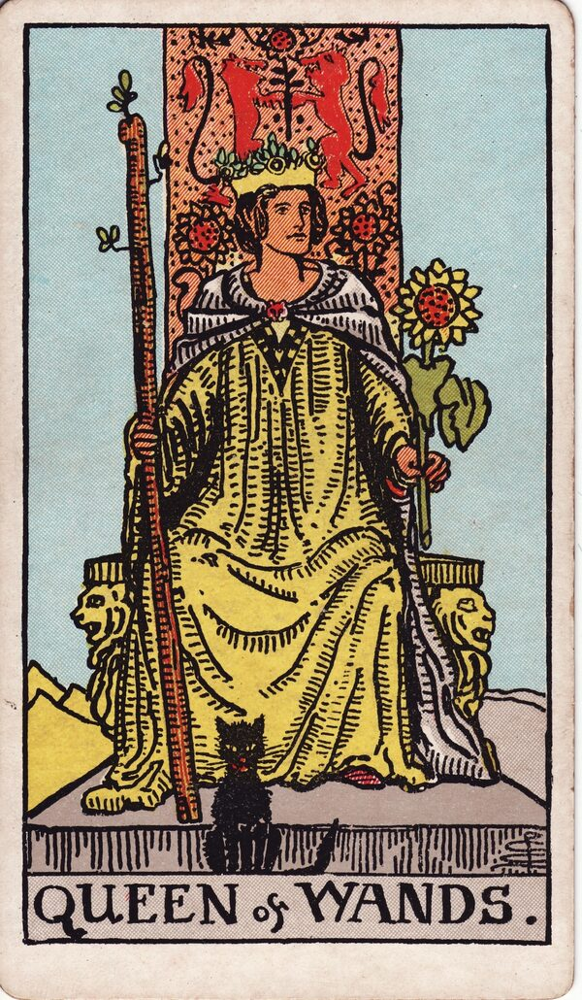

Minor Arcana · Suit of Wands
Queen of Wands Tarot Card Meaning
The Queen of Wands is warm, magnetic confidence - self-assured and impossible to ignore. Want to know what it means in your spread? Every reader on our line is hand-vetted - connect in under 60 seconds, $1 for your first minute, hang up anytime.
- Hand-vetted readers
- Available 24/7
- Hang up anytime

Queen of Wands - What It Shows
The Queen sits on a throne carved with lions, a wand in one hand and a sunflower in the other, a black cat at her feet. She faces forward, open and unguarded. The sunflowers are warmth and vitality; the cat is independence and intuition. She has mastered the fire of the suit inwardly - she doesn't chase like the Knight; people come to her.
Queen of Wands Upright Meaning
Upright, the Queen of Wands is confident, warm, charismatic mastery. She's courageous, sociable, creatively powerful, and secure in herself - the energy of someone who knows their worth and lifts the room. As a quality to embody, she's "be boldly, warmly yourself, and don't shrink."
Queen of Wands Reversed Meaning
Reversed, the confidence wobbles. Insecurity hiding behind bravado, jealousy, comparison, attention-seeking, burnout, or a domineering streak. It can mean self-belief has tipped into either self-doubt or ego.
Queen of Wands as a Person
As a person, she's charismatic, independent, warm, and self-assured - a natural leader and social spark who's comfortable in her own skin and generous with her energy when secure.
Queen of Wands as Feelings & in Love
As feelings, the Queen of Wands is warm, confident, openly interested - secure attraction, not mind games; they feel energised and proud around you. Example: a caller asked how a new partner felt; the Queen of Wands described steady, self-assured warmth - someone who likes you confidently and isn't hiding it - which reassured her she wasn't imagining a one-sided spark.
Queen of Wands in Career & Money
For work it's leadership, visibility, and creative authority - owning a room, running your own thing, being recognised for both warmth and competence. Example: someone hesitant to put themselves forward for a leadership role pulled this card; the message was that the capability and presence are already there - stop waiting for permission.
Queen of Wands as Advice
As advice: lead with warm confidence. Back yourself, take up space, and let people come to you instead of shrinking or chasing.
What People Ask About the Queen of Wands
Common questions readers hear about this card:
"Queen of Wands as feelings?"
Warm, confident, openly drawn to you - secure, not game-playing.
"Is it a specific person?"
Often a charismatic, independent woman or that energy in anyone - or you.
"Reversed - are they jealous?"
Possibly insecurity or jealousy under the surface; read nearby cards.
"Does it mean be more confident?"
As advice, yes - embody self-assured, warm presence.
Queen of Wands - Yes or No?
Upright: a confident yes. Reversed leans no, or "yes once the insecurity is addressed."
Queen of Wands Reversed in Love & Career
Reversed, the Queen of Wands reads differently by area. In love, the warm confidence wobbles into insecurity, jealousy, or comparison - needing constant reassurance, or a partner whose self-doubt shows up as control or attention-seeking. It can also be burnout dimming someone's usual spark. In career, reversed it's confidence tipping into ego or domination, or competence undermined by self-doubt and people-pleasing. The reversed Queen's question is whether self-belief has collapsed into insecurity or inflated into ego - opposite failures of the same trait. A live reader can tell you which way it's leaning, and whether the energy is yours or someone else's in the situation.
Queen of Wands Timing in a Reading
Timing is the least precise thing tarot does, so treat this as a lean, not a date. Court cards more often describe a person or an energy than a clock; when the Queen of Wands does flag timing, readers tend to read it as a confident period you're moving into, sometimes linked to summer or Leo season. Reversed, it points to a stretch where insecurity or burnout slows things until you steady yourself. A live reader reads this from the full spread far more reliably than the card alone.
Queen of Wands Card Combinations
Context changes everything - a few pairings readers see often:
Queen of Wands + The Sun
Radiant visibility and success - warmth that draws people in.
Queen of Wands + Queen of Cups
Confidence paired with emotional depth and warmth.
Queen of Wands + Five of Wands (rev)
Rising above pettiness and refusing to be drawn into drama.
Queen of Wands in a Tarot Reading
A meanings page is the map; a live reading is the territory. The Queen of Wands shifts with its position and the cards around it - which is what a hand-vetted reader interprets for your question. See the full Suit of Wands, all 56 cards on the Minor Arcana hub, or start a phone tarot reading.
← Knight of Wands · Next: King of Wands →
What Does the Queen of Wands Mean for You?
A meanings list is the map; a live reading is the territory. We'll connect you with the right hand-vetted tarot reader in under 60 seconds. $1/min first call · 15 minutes for $10 · hang up anytime · 100% satisfaction promise.
Call (888) 920-6662 NowQueen of Wands - Frequently Asked Questions
What does the Queen of Wands mean?
Confident, warm, magnetic self-assurance - courageous and creatively powerful.
What does it mean reversed?
Insecurity beneath confidence, jealousy, burnout, or a domineering shadow.
What does it mean as feelings?
Warm, confident, openly drawn to you - secure attraction, not games.
What does it mean as a person?
Charismatic, independent, warm, self-assured - a natural leader and social spark.
How much does a reading cost?
First-time callers pay $1/min, or 15 minutes for $10, and you can hang up anytime.
Get Your Tarot Reading Now
Connected to a hand-vetted reader in under 60 seconds, the cards pulled on your real question, and you hang up with clarity.
Call (888) 920-6662